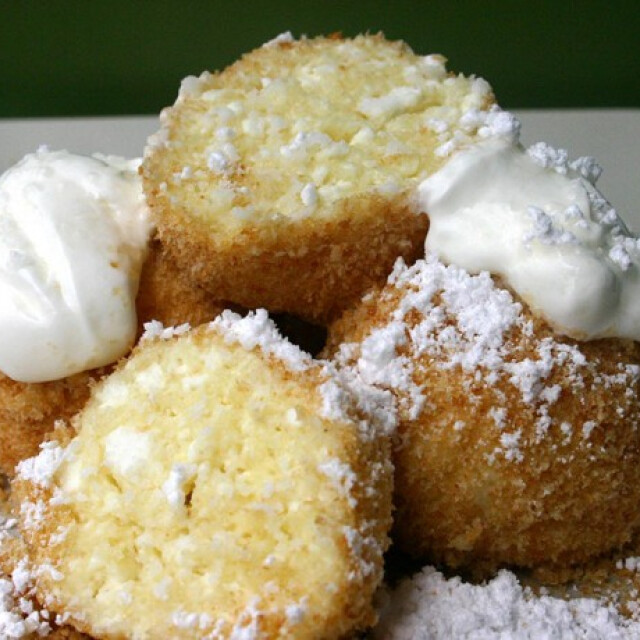
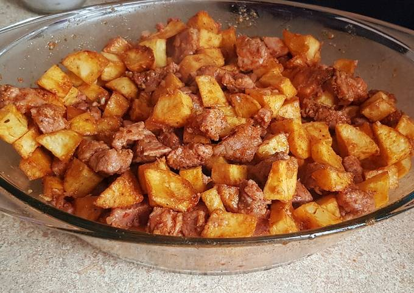
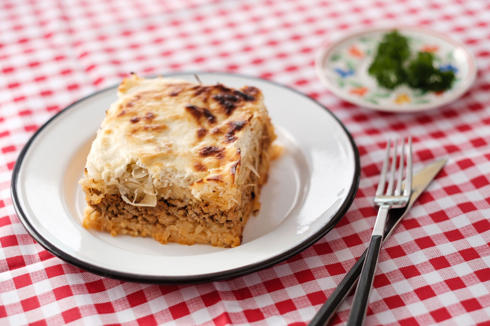

Túrógombóc Recipe

A túrógombóc egyszerűen elkészíthető, olcsó tésztaétel. Alapanyaga tehéntúró, búzadara és tojás keverékéből készült tészta, amelyet néhány perces főzés után pirított zsemlemorzsában megforgatnak, és változatos módon ízesítve tálalnak. Főételként vagy desszertként is fogyasztják.
How to make:
- A túrót vlilával áttörjük, majd összegyúrjuk a tojásokkal, a búzadarával és a sóval. Ezután lefedve a hűtőbe tesszük 3-4 órára, hogy megdagadjon a búzadara.
- Fazékban vizet forralunk, amelybe kb. 1 kiskanál sót szórunk.
- Vizes kézzel kisebb gombócokat formázunk a túrós masszából, majd a sós vízbe tesszük őket, és kb. 5 perc alatt kifőzzük mindet. Leszűrjük, félretesszük.
- A zsemlemorzsát aranybarnára pirítjuk az olajon, és beleforgatjuk a leszűrt gombócokat. A porcukorral megszórva és a tejföllel meglocsolva kínáljuk.
Ingredients:
- 50 dkg túró
- 3 db tojás
- 2 dl búzadara
- 1 csip só
- 10 dkg zsemlemorzsa
- 2 ek olaj
- 5 dkg porcukor
- 2 dl tejföl
Click here to see more!
Brassói aprópecsenye Recipe

A brassói aprópecsenye egy sertéshúsból készített főfogás. Eredete ismeretlen, többféle legenda övezi.
How to make:
- Az eredeti brassói elkészítéséhez alaposan megmossuk, megpucoljuk és kockákra vágjuk a krumplit. Forró olajat melegítünk, és szép pirosra sütjük.
- Közben a húst is megmossuk és nagyjából akkora kockákra vágjuk, mint a krumplit.
- A szalonnát és a vöröshagymát szintén felkockázzuk, de ezeket már apróra vágjuk. Egy lábasban kisütjük a szalonnát, amikor üveges, rátesszük a vöröshagymát és együtt vliágosra pirítjuk.
- Hozzáadjuk a sertéshúst, fehéredésig sütjük, aztán megszórjuk pirospaprikával, sózzuk, borsozzuk, és beletesszük a zúzott fokhagymát is.
- Kevés vizet aláöntve, fedő alatt pároljuk a brassóit, amíg a hús teljesen puha nem lesz. Ha szükséges, pótoljuk az elpárolgott vizet. Amikor a hús már majdnem megpuhult, hozzáadjuk a majoránnát. A végén ne csak zsír maradjon a húson, hanem párolószaft is, ami kb. 1 dl lehet.
- Az olajban vagy zsírban előzőleg kisütött krumplit összekeverjük a szaftos hússal. Uborkasalátával forrón tálaljuk.
Ingredients:
- 50 dkg sertéslapocka
- 1 fej hagyma
- 4 gerezd fokhagyma
- 1 tk pirospaprika
- só
- bors
- 1 tk majoranna
- 1 kg burgonya
- olaj
Click here to see more!
Rakott káposzta Recipe

“Felmelegítve csak a töltött káposzta jó” - tartja a népi bölcsesség, de a megállapítás pontatlan: bármelyik káposztás és rakottas ételre igaz, hogy két-három nap kell ahhoz, hogy az ízei teljesen összeérjenek. A savanyú káposzta remek vitaminforrás a téli időszakban, és az íze is fenséges, érdemes tehát minél többféle formában elkészíteni.
How to make:
- A rakott káposztához rizst egy evőkanál olajon fehéredésig pirítjuk, sózzuk, majd 1,5-szeres mennyiségű vízzel felöntve fedő alatt alacsony lángon megpároljuk.
- A savanyú káposztát hideg víz alatt átöblítjük, majd lecsöpögtetjük.
- A vöröshagymát felaprítjuk, a fokhagymával együtt és felforrósított olajon megdinszteljük. A tűzről lehúzva rászórjuk a pirospaprikát, majd hozzáadjuk a darált húst. Majorannával fűszerezzük, sóval, borssal ízesítjük, majd közepes lángon, folyamatos kevergetés mellett megpirítjuk.
- Ha megfőtt a rizs, a darált hússal és a savanyúkáposztával felváltva, egy hőálló edénybe rétegezzük. A tetejére kenjünk a sóval és a borssal elkevert tejfölt, majd 175 fokra előmelegített sütőben 25 perc alatt összesütjük.
Ingredients:
- 50 dkg savanyú káposzta
- 40 dkg darált hús
- 1 bögre rizs
- 2 dl tejföl
- 1 fej hagyma
- 2 gerezd fokhagyma
- 2 db babérlevél
- 0.4 dl napraforgó
- 1 ek őrölt fűszerpaprika
- 1 tk majoranna
- só
- bors
Click here to see more!